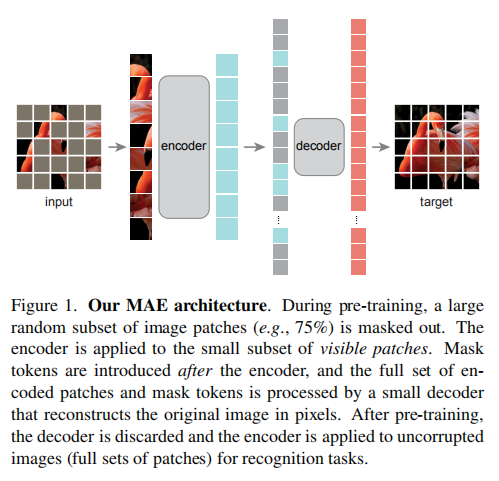
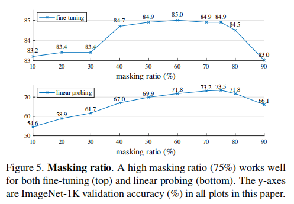
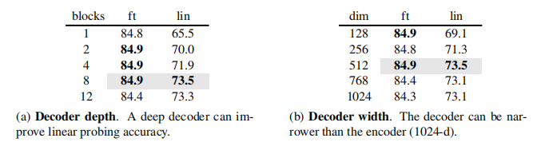
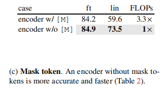
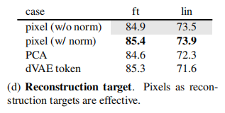

论文阅读：Masked Autoencoders Are Scalable Vision Learners
Motivation/Problem
NLP 领域的自监督预训练方式不需要标注数据，解决了模型需要大量标签数据的问题。典型的解决方案有基于自回归语言模型的 GPT 和基于遮罩自编码 (masked autoencoding) 的BERT。它们的概念都很简单：
移除数据中的一部分然后预测被移除的内容。
遮罩自编码，也就是一种更通用的去噪自编码，这种想法很自然，也应该能应用于计算机视觉。
但是当前自编码方法在 CV 领域的应用远远落后于 NLP 领域，所以自然而然产生了一个问题：去噪自编码在 CV 和 NLP 领域的区别是什么？
作者总结了三点：
直到最近，CV 和 NLP 的网络架构都不同。
在过去十年，卷积网络在视觉方面处于支配地位。典型卷积在标准网格上进行操作，它不能直接将 NLP 领域的 ‘indicator’ 概念比如 ‘mask tokens’ 或者 ‘positional embeddings’ 整合到卷积神经网络中。
不过这种架构差距已经被 ViT (Vision Transformers) 的引入解决，并且将不再成为障碍。
语言和视觉的信息密度不同。
语言是人造信号，具有高度语义性和信息密度。当训练模型去预测每个句子里缺失的词时，我们可以认为这个任务要求模型具有熟练的语言理解。图片则相反，它是具有高度空间冗余的自然信号。在对邻域块，物品和场景具有一点 (little) 理解的前提下，可以恢复缺失块。
为了克服这一不同并且学到更多有益的特征，我们发现了一个在 CV 领域很有用的简单策略：随机 mask 掉非常大比例的 patches。这个策略大幅度减少了冗余而且创造了一个非常有挑战性的自监督任务。这个任务要求模型要求模型掌控全局信息，而不是仅仅拥有 low-level 图像信息的理解 (例如局部缺失的物体形状，颜色等等)。
将特征表示重新映射回输入的 Autoencoder 的 decoder，对于重建文本和图像起着不同的作用。
在视觉领域中，decoder 重建的是低维语义级别的 pixels。在语言领域中，它重建的是具有丰富语义的信息。虽然在 BERT 中 decoder 没有那么重要，但是在图像领域中，decoder 对于学到的 latent representation 的语义级别具有决定性的重要作用。
所以 encoder 的任务是：处理没 mask 掉的块，输出 latent representation，decoder 的任务是，把 mask 掉的块和 latent representation 合并的信息作为输入，输出重建图像。
在这个设计下，encoder 只需要处理一小部分没有 mask 掉的 patches，减少了总体预训练时间和内存需要。
Approach
总架构如图所示。和传统的 autoencoder 不同，采用了不对称的设计。MAE 的 encoder 只在部分可被观测的信号上进行操作，然后轻量级 decoder 使用 latent representation 和 mask tokens 重建所有信号。
Masking
跟随 ViT 的思想，MAE 把图片分为正常的没有重叠的 patches 然后使用均匀分布随机取样然后 mask 掉剩余的块 (不做替换)。
高 mask 比例的随机采样消除了冗余，因此任务不能简单地从邻域 patches 推断来完成。均匀采样避免了潜在的中心偏移 (比如 mask 掉更多的中心区域 patches)。高度稀疏的输入给设计一个高效的 encoder 创造了机会。
MAE encoder
MAE 的 encoder 是一个只在没有 mask 掉的 patches 上应用的 ViT。和在标准 ViT 中一样，MAE 的 encoder 通过一个添加位置嵌入的线性映射把 patches 嵌入，然后把映射结果使用 Transformer 块处理。
Just as in a standard ViT, our encoder embeds patches by a linear projection with added positional embeddings, and then processes the resulting set via a series of Transformer blocks.
MAE decoder
MAE decoder 的输入由 (i) 编码过的可视 patches (ii) mask tokens 组成。每个 mask token 都是一个共享的向量，指示是否存在一个待预测的缺失 patch。
Each mask token is a shared, learned vector that indicates the presence of a missing patch to be predicted.
除此之外，向所有 patches 添加位置嵌入信息，来指示他们在图像中的位置。Decoder 由另外一系列的 Transformer 块组成。
Decoder 只用来在预训练过程中完成图像重建任务，只有 encoder 用来输出用于识别的 image representations。所以 decoder 的架构很灵活，因为 decoder 独立于 encoder 的设计。
MAE 研究者使用相对于 encoder 来讲非常小的 decoder 做了实验，他们默认的 decoder 是 encoder 的计算量的不到 $10%$。这种非对称的设计，轻量的 decoder 大大减少了预训练的时间。
Reconstruction target
重建目标是预测每个 masked patch。最后一层的 decoder 是一个输出 channel 等于一个 patch 的 pixel 个数的线性映射，最后的输出通过 reshape 形成一幅重建图像。Loss function 计算重建图像和原图像在像素空间的均方误差 (MSE)。MAE 只在 masked patches 上计算 loss。
他们还研究了一种变体，重建目标是每个 mask patches 的归一化后的像素值。具体地说，他们计算一个 patch 中所有像素的平均值和标准差，并使用他们来归一化这个 patch。在他们的实验中，使用归一化的像素值可以提高 representation 的质量。
Simple implementation
MAE 预训练可以被高效实现，它不需要任何特殊的稀疏操作。首先(使用一个附加位置嵌入的线性映射)为每个输入 patch 生成一个 taken，然后随机 shuffle tokens 的列表，把列表的最后一部分移除 (基于 mask ratio)。Encoding 后，把移除的 mask tokens 附加到 encoded patches 后，然后 unshuffle 整个列表来对齐所有的 tokens 和他们的 targets。在这个完整列表上应用 decoder (使用附加位置嵌入)。
ImageNet Experiments
Mask ratio
Decoder design
其中 ft (fine-tuning), lin (linear probing)。
Mask token
encoder w/ [M] 把 masked patches 也作为输入，encoder w/o [M] 不把它作为输入。
可以看到丢弃 masked patches 的运算效率大大提升，不使用 fine-tuning 时的效果也更好。
Reconstruction target
w/o without, w/ with, PCA 在 patch space 上应用 PCA，使用最大的 PCA coefficients 作为 target。